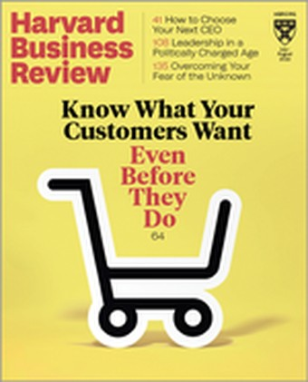
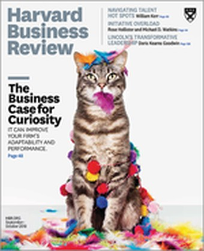
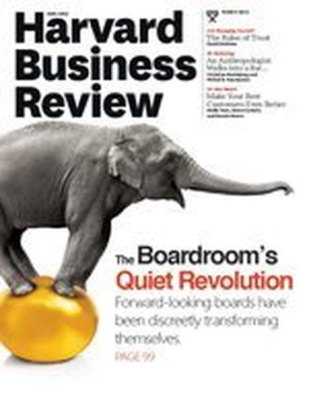

Original work
Research
Original research and analysis on the questions that define the CEO role – succession, governance, co-leadership, crisis, and the arc of a career at the top.
Harvard Business Review4

Is It Time to Consider Co-CEOs?Harvard Business Review- Look to Military History for Lessons in Crisis LeadershipHarvard Business Review, July 2020

The CEO’s Guide to RetirementHarvard Business Review, September 2018
The Boardroom’s Quiet RevolutionHarvard Business Review, March 2014
The New CEO ReportFlagship

Published annually
The 2025 Feigen Advisors New CEO Report
The 2025 New CEO Report profiles each new CEO in the top half of the S&P 500 in 2025, featuring insights from 10 years of data on CEO succession.
Download the reportPublications1
Books1